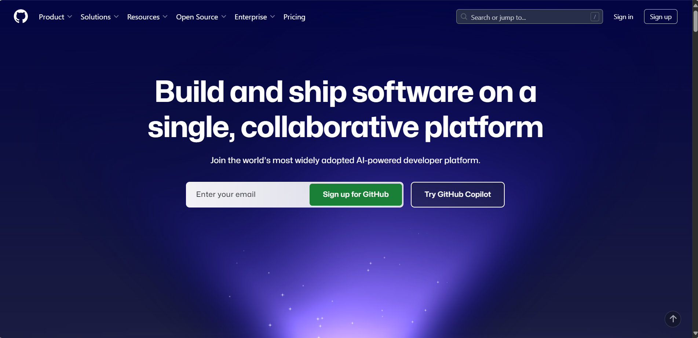
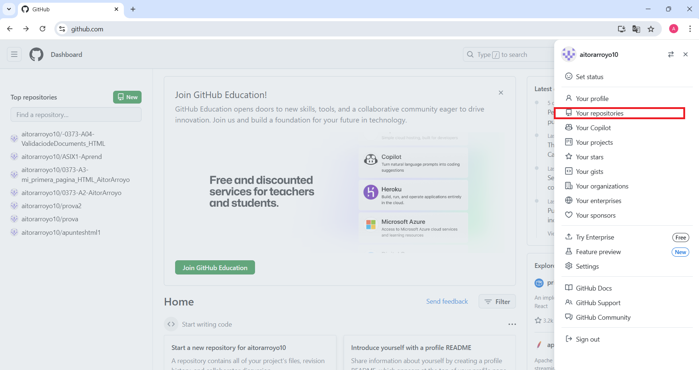
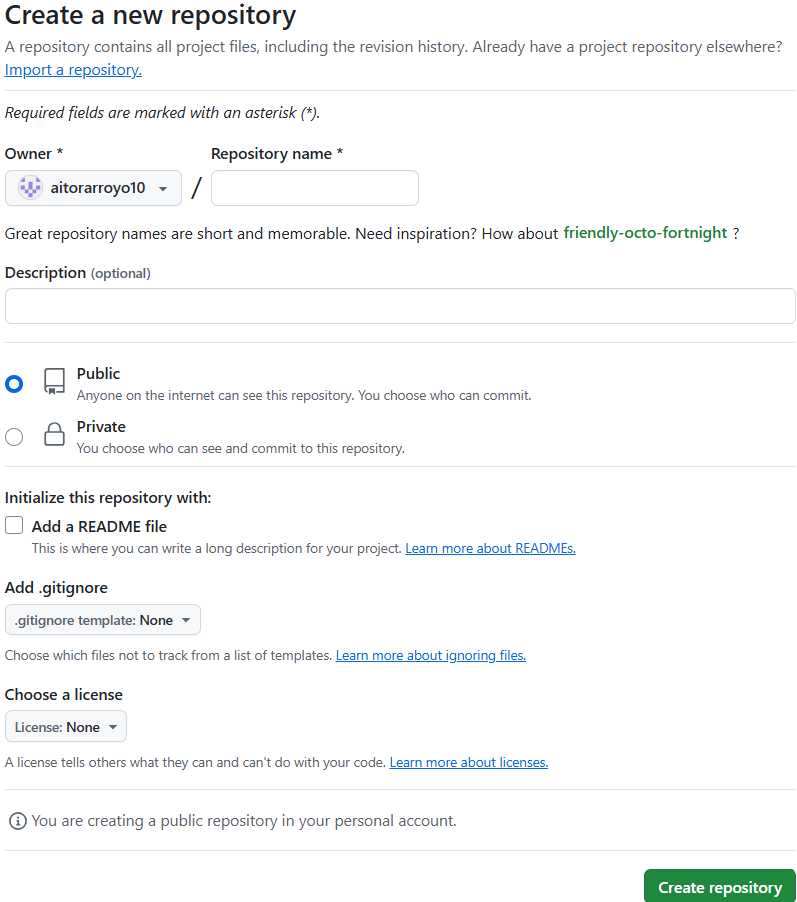
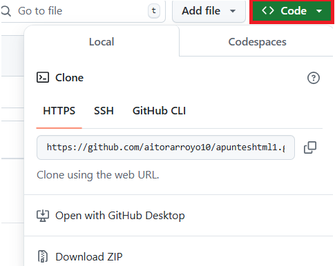

Primer paso: Iniciar sesión o registrarse en github a través del siguiente enlace: Github
Segundo paso: En la esquina superior derecha, hacer clic en tu foto de perfil y acceder al apartado "Your repositories".
Tercer paso: Una vez accedemos al apartado de nuestros repositorios, seleccionaremos la opción "new" para crear uno nuevo.
Cuarto paso: Aquí podremos configurar la creación de un nuevo repositorio, como su nombre, estado de publicación, etc.
Quinto paso: Instalaremos la herramienta GIT

Sexto paso: Para clonar nuestro repositorio, tendremos que acceder a este, clicar en "Code" y copiar la url. Una vez hecho esto, abriremos el CMD y accederemos a la ruta donde queremos que esté guardado. Si ya tenemos git instalado, utilizaremos la función "git clone" con la url del repositorio para poder clonarlo de forma local.
Séptimo paso: Para poder inicializarlo, tendremos que ejecutar la orden "git init" dentro de la carpeta donde queramos que se ejecute el repositorio.